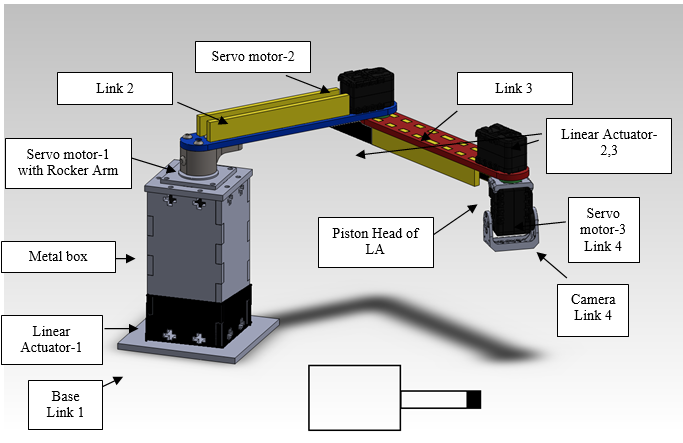

In-Helmet Spacesuit Device
Ongoing

Astronauts occupy spacesuits during extravehicular activities (spacewalks for experiments, maintenance, installation of modules on the International Space Station etc.) and also during the launch/return of the spacecraft to/from the Earth. During these long periods of time, substances such as sweat, irritants, moisture, coolant, antifogging agents from the helmet visor etc. may interact with the astronauts’ eyes and facial region, causing debilitating pain, discomfort and also temporary loss of vision in some cases. These substances cannot be cleaned off manually due to the inaccessible and sealed nature of the inside of a spacesuit helmet in operating condition.
The device is to be attached inside a spacesuit helmet, composed of sweeping robotic arms with absorbent and cleaning heads which would effectively remove the undesirable substances and provide relief, hence enabling the astronauts to operate unhindered and undistracted during spacesuit activities
The device will be mounted on a snoopy cap of a concerned astronaut. All the information ranging from design to torque calculation are given here.
Extrusion Die
March-April 2018

Extrusion is a process used to create objects of a fixed cross-sectional profile. A material is pushed through a die of the desired cross-section.
We have developed a square face extrusion die which can be used to extrude ductile materials like copper and aluminum etc. We have successfully tested it with wax and aluminum. We also did a study on effects of Extrusion pressure, Die angle, Material’s flow from die’s outlet etc and also did CFD( Computational Fluid Dynamics) Analysis of Extrusion process. It was a group project. We were guided by Prof. Nilesh Ghetiya.
Visual Inspection and Quality Control with Robotics and Machine Learning
March-May 2018

The measurement of dimension is conventionally done by using the precision instruments like vernier caliper, micrometer etc. This measurement is done by human being. So that during the measurement of the dimension there are always chances of errors. The reasons of these errors are may be due to repetitive work -worker are getting bored due to same work for a whole day, an efficiency of the workers - at starting of the day they are energetic but when the day passes they lose their energy, sensing error, readability error etc. There may be errors in an instrument like zero error, wear and tear etc. So, it is not beneficial for the industries who deals with the high accuracy and precision like manufacturing of piston and cylinder for an automobile system, surgical instruments, micro-processing chips etc. So, to overcome this kind of problems we are using robotics with machine learning which will give us dimensional accuracy and precision.
This will be beneficial for industries which are producing sensible parts of machinery like automobile and electronics part etc.